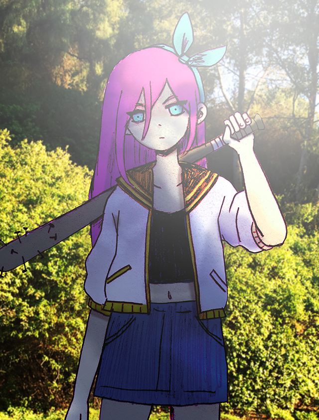
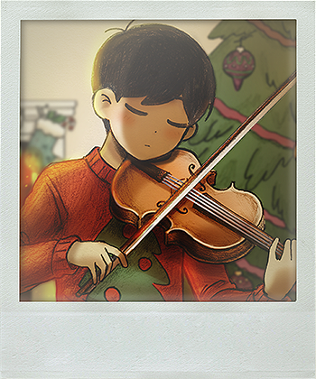
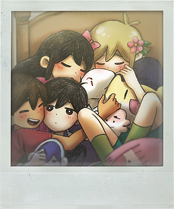
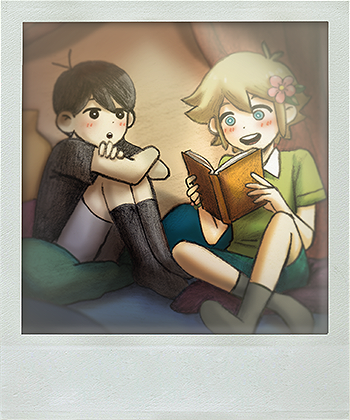
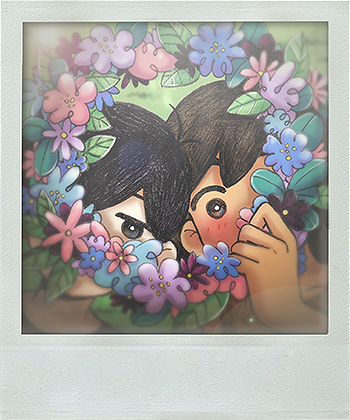

LOINTAINVILLE
Nuit 1
Vous vous réveillez chez vous, il fait nuit, votre nom est SUNNY. Vous apprenez via un message vocal de votre mere que vous déménagerez dans 3 jours. Vous avez faim, vous allez chercher à manger, faites ce qui s'apparente à des crises de panique dans l'escalier pour manque de mots pour l'expliquer... Avez une vision d'horreur en ouvrant la porte pour ce que vous pensiez être votre sœur MARI... et retournez vous coucher.
TROIS JOURS RESTANT
Bonjour! Aujourd'hui, vous sortez dehors, et voyez KEL! Vous traînez ensemble pour discuter après tout ce temps... Puis vous allez au parc, ou vous voyez BASIL qui se fait embêter par... AUBREY ET SON NOUVEAU GROUPE D'AMIS ?! Elle a d'ailleurs bien changée d'apparance:

Elle est étonnée de vous voir: Vous n'etes pas sortis de chez vous pendant 3/4 ans. En essayant de defendre basil, vous engagez un combat, comme dans le Dreamworld, et... le combat s'arrete abruptement, vous avez fait une erreur, je ne vous expliquerai pas quoi au cas ou vous décidiez de jouer au jeu vous même.
Vous allez ensuite voir BASIL une fois que le groupe d'AUBREY prend la fuite, l'accompagnez chez lui, et juste avant que vous partiez BASIL craque et vous admet que AUBREY à volée l'album photo de BASIL. Vous partez donc en quête pour la retrouver...
Enfin, vous apprenez qu'elle est à l'ÉGLISE... Vous y allez donc avec KEL, vous installez sur le banc derrière elle, et KEL lui parle en chuchottant, il dit que MARI n'aimerait pas voir qu'elle fait ca, et elle s'énerve en disant que c'est inutile d'amener MARI dans l'histoire comme elle... est morte. Elle dit que KEL a fait son deuil trop vite pendant qu'elle vient toujours à l'église pour s'en remttre, elle essaye de partir, mais KEL crie en disant de rendre l'album ce qui attire l'attention des personnes dans l'église, qui commentent sur le fait qu'elle est hors de controle et indecente... Elle se met en colère, vous bat, rentre chez elle, et en passant devant chez elle vous la voyez sortir pour jeter l'album de BASIL dans la poubelle... Vous le récupérez donc et l'amenez a BASIL, qui a l'air assez mal à l'aise...
Vous décidez de regarder l'album photo, et voici des photos qui étaient dedans, on dirait qu'il manque toutes les photos ou MARI était...



